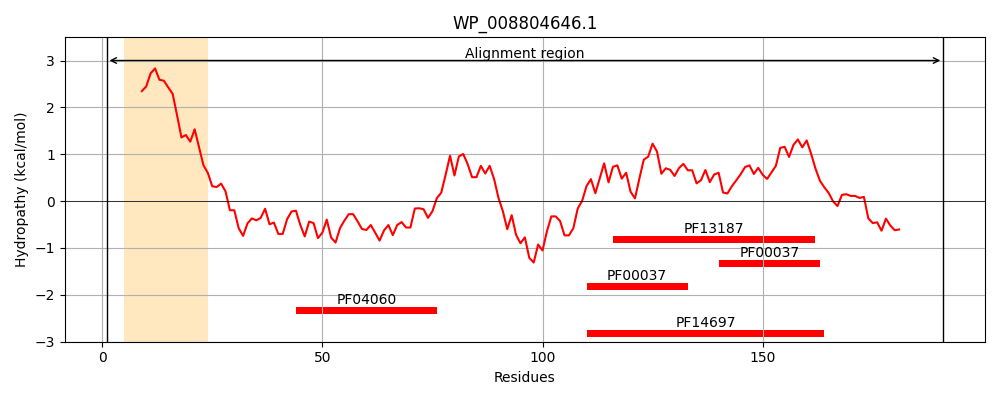
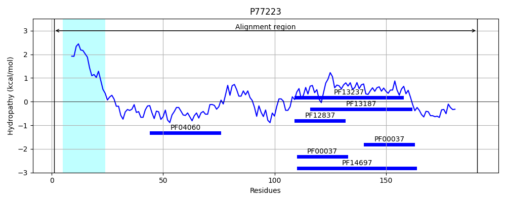
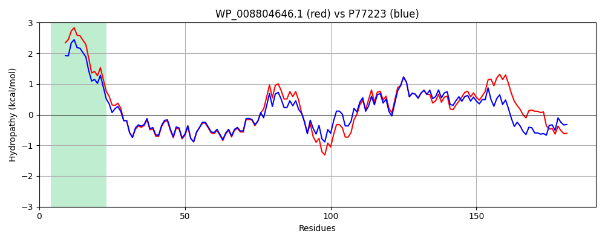

Hit Accession: P77223
Hit TCID: 3.D.6.1.4
Hit Description: gnl|BL_ORD_ID|11487 gnl|TC-DB|P77223|3.D.6.1.4 Electron transport complex subunit RsxB OS=Escherichia coli (strain K12) GN=rsxB PE=1 SV=1
Mach Len: 191
e:0.000000
Query TMS Count : 1
Hit TMS Count: 1
TMS-Overlap Score: 1.000000
Predicted Substrates:CHEBI:5584;hydron
BLAST Alignment:
Score: 879 , Bit scores: 343 bits, E-value: 2.4e-122, Alignment length: 191, Percentage identity: 83
Query: 1 MSAVWIAVIAISLLGLIFGLILGYASRRFAVQDDPVVEKIDELLPQSQCGQCGYPGCRPYAEAVGAQGEKINRCAPGGEAVMLKIAALLNVDPQPVDGDEQEAEPVRMLAVIDEPNCIGCTKCIQACPVDAIVGATRAMHTVMNDLCTGCNLCVAPCPTQCISLVPVATTPETWKWDLHAIPVRNIPVEQH 191
M+A+WIAV A+SLLGL FG ILGYASRRFAV+DDPVVEKIDE+LPQSQCGQCGYPGCRPYAEA+ GEKINRCAPGGEAVMLKIA LLNV+PQP+DG+ QE P RM+AVIDE NCIGCTKCIQACPVDAIVGATRAMHTVM+DLCTGCNLCV PCPT CISL PVA TP++WKWDL+ IPVR IPVE H
Sbjct: 1 MNAIWIAVAAVSLLGLAFGAILGYASRRFAVEDDPVVEKIDEILPQSQCGQCGYPGCRPYAEAISCNGEKINRCAPGGEAVMLKIAELLNVEPQPLDGEAQEITPARMVAVIDENNCIGCTKCIQACPVDAIVGATRAMHTVMSDLCTGCNLCVDPCPTHCISLQPVAETPDSWKWDLNTIPVRIIPVEHH 191 | Protein Hydropathy Plots: |
|---|
|  |  |
Pairwise Alignment-Hydropathy Plot:
|
|---|
|  |